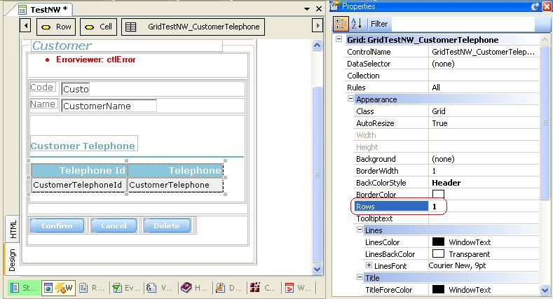
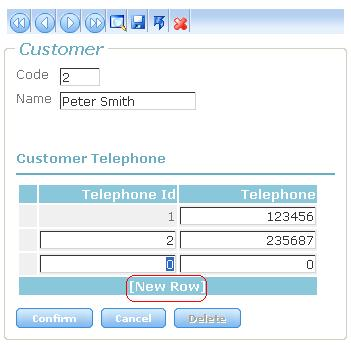
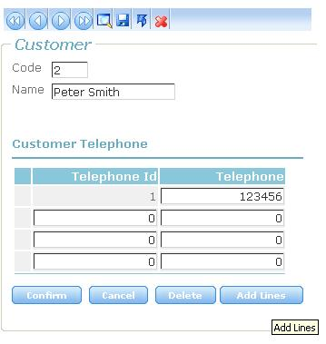
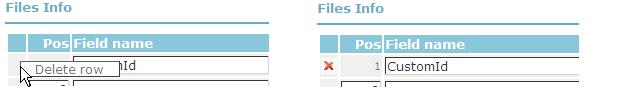

Rows propertyThe Rows property is a design and runtime property, which is used to specify the number of records to be loaded (in Web Panels) or the number of empty lines (in Web Transactions) in a grid or freestyle grid.  For more information, click here. Adding new empty rows to the gridThere are two ways of adding new rows to grids in web transactions, as explained below:
 2. If the Addlines method is used for the grid, the "New Row" option will not appear in the grid. For instance, suppose you have the following code for the web transaction grid: Event 'AddLines' gridTestNW_CustomerTelephone.AddLines(2) EndEvent In this case the "New Row" won't be available for the grid, and you will have to add a buton associated to 'AddLines' event, in order to be able to add new lines.  Delete linesTo delete a grid line at runtime, right-click anywhere on the row and confirm in the “Delete Row” textbox.  Automatic mode inferenceThe mode is inferred without having to click any button. In addition, all the data of the record (header and lines) is sent to the client when entering a valid web transaction key. No Orders and conditions properties on transaction's grids.This means that as for transaction's grids are thought to show every record it has, if conditions were able on transaction's grids, it would not be possible to know if a record was inserted, or hidden by a condition, on transactions all data must be always visible. ConsiderationsWhen using Grids on a Transaction; it is needed at least one editable control on the grid. See also
|
| Backlinks | ||
| AddLines Method | Category:Grid control | HowTo: configure the style of the Grids New Row |
| Sortable property |